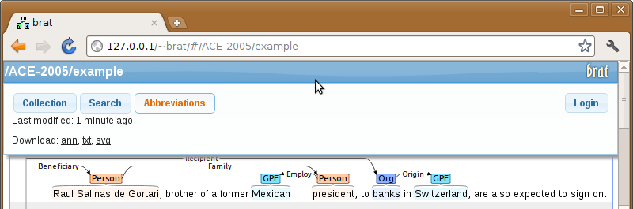
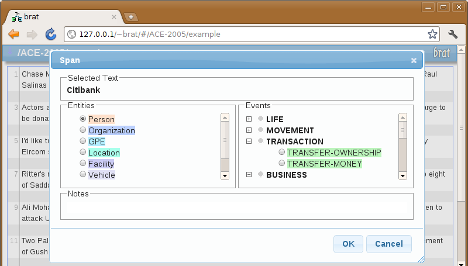
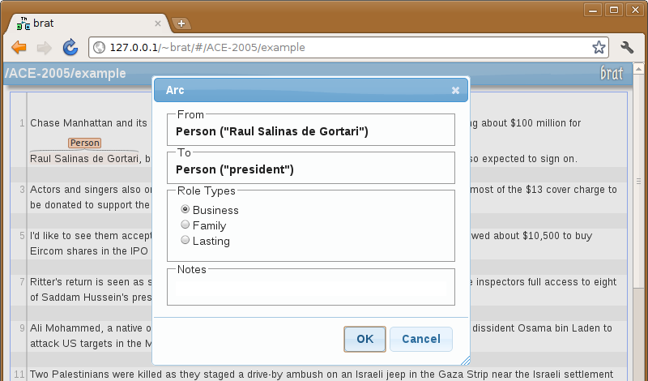

NOTE: this manual page is under construction and is still very much incomplete.
When a document is selected, the main window area shows a visualization of the text and annotations of that document.

Placing the mouse cursor over an annotation shows some further information about that annotation, including the full form of the annotation type, the annotation ID, and any attributes or notes attached to the annotation.
Placing the mouse cursor over the top bar of the window opens the tool menu which drops down from the top of the screen. Once the mouse pointer leaves the menu area the menu will disappear, thus allowing more screen space for the annotations by only appearing when needed.
The menu provides access to the following features:
The collection browser, accessible from the menu or by pressing the tab key, allows you to access the different text collections and individual documents in those collections set up on your installation.

To edit annotations, users first need to log in by clicking on the "Login" button and enter a valid username and password in the login dialog.
When logged in, it is possible to add annotations for a text span simply by selecting that span with the mouse.

Selection can be performed either by "dragging" over the text or by double-clicking on a word.
Note: a multi-word span can also be selected with two double-clicks on the first and last words by holding CTRL during the first double-click and holding down shift during the second double-click.
After selecting a span, the system shows the span annotation dialog.
This allows the selection of the type to assign to the newly created annotation, as well as the addition of comments or setting additional aspects of the annotation such as attribute values (if available).
The types available for annotation and additional aspects that are available for marking depend on the configuration of the current collection.
Associations between annotated text spans can be annotated by "dragging" the mouse from one annotation to the other.

Releasing the mouse pointer over another annotation again brings up a dialog for selecting the type of the annotation.
The types available for selection in this dialog depend both on the configuration of the collection and the types of the two selected annotations.
(When attempting to associate annotations that do not have any configured annotation types that can connect them, an error message will be shown instead of this dialog.)
Existing annotations can be modified or deleted from the same annotation dialog, which can be brought up by double-clicking on an annotation.
(The available annotation types and other aspects depend on the configuration of each collection.)
TODO